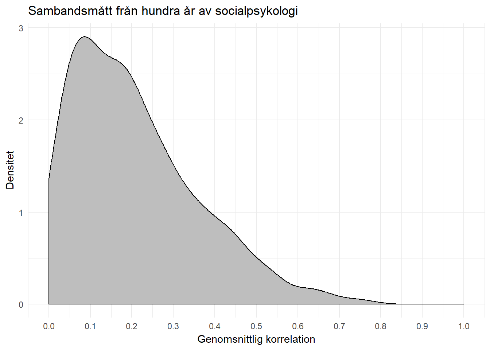

13 Hur gör jag…
Här hittar du:
- Frågor från studenter
- Frågor om statistik och SPSS
- Tips på vidare läsning
13.1 Statistik
13.1.1 Vad är sambandsmått?
Sambandsmått, eller korrelationsmått, är ett mått på sambandet mellan två variabler. Det innebär att två variabler samvarierar med varandra. Till exempel samvarierar vikt och längd. Ju längre man är, desto tyngre är man.
Videor om korrelation:
13.1.2 Vilket sambandsmått ska jag välja?
Det är variabelns skalnivå som avgör vilket sambandsmått du ska använda.
- Om båda variablerna är på nominalskalenivå: Cramérs V.
- Om båda variablerna är på ordinalskalenivå: Spearmans rho, Kendalls tau-b/tau-c.
- Om båda variablerna är på intervallskalenivå: Pearsons r.
- Om variablerna har olika skalnivåer: Utgå från den minsta skalnivån.
Om du har variablerna kön (man/kvinna) och inkomst (i kronor) har kön den minsta skalnivån. Kön är då på nominalskalenivå och inkomst på intervallskalenivå. Därmed bör du välja Cramérs V.
{kind=link}
13.1.3 Hur tolkar jag sambandsmått?
Det är ämneskunskap som framför allt bör guida tolkningen av sambandsmått. Om du saknar ämneskunskap har Cohen (1988) gett riktlinjer för Pearsons r och Cramérs V:
- 0,10 = litet samband
- 0,30 = medelstort samband
- 0,50 = stort samband
Pearsons r varierar från -1 till +1. Cramérs V kan bara variera från 0 till 1 eftersom det är på nominalskalenivå.
Sambandsmått i samhällsvetenskap är oftast ganska små. Se bilden nedan. Den visar att det genomsnittliga samabandsmåttet är r = 0,21 och är baserad på 25 000 studier med 8 miljoner människor över 100 år (Richard, Bond, & Stokes-Zoota, 2003).

13.1.4 Vad är skillnaden mellan Phi och Cramérs V?
Phi kan du ignorera helt och hållet. Titta bara på Cramérs V.
Phi är ett sambandsmått som endast fungerar för korstabeller med storleken 2 x 2 med två binära variabler. Cramérs V fungerar däremot på alla storlekar av korstabeller.
13.1.5 Vad är p-värden och statistisk signifikans?
P-värdet visar sannolikheten att få ett resultat som är så extremt (eller mer extremt), givet att nollhypotesen är sann. P-värdet går från 0 till 1.
Läs mer: P-värden och hur man tolkar dem
13.2 SPSS
13.2.1 Var hittar jag p-värdet i SPSS?
Titta i kolumnen Approximate Significance (Approx. Sig.) eller bara Sig.
13.2.2 Hur analyserar jag en fråga som är kodad på flera variabler?
Låt säga att du har kodat en nyhetsartikel för att se vilka aktörer som förekommer i texten. Varje aktör kan då kodas så att de blir en egen variabel, exempelvis:
- Förekommer politiker? Ja=1 Nej=0
- Förekommer journalister? Ja=1 Nej=0
- Förekommer medborgare? Ja=1 Nej=0
Hur analyserar man detta med en frekvenstabell eller korstabell?
I SPSS kan du använda verktyget Analyze > Tables > Custom Tables. Du kan också använda verktyget Analyze > Multiple Response. Se länkarna nedan.
13.3 Vilka viktiga begrepp bör jag känna till?
| Begrepp | Beskrivning |
|---|---|
| begreppsvaliditet | |
| Chi2 | |
| Cramérs V | |
| deskriptiv statistik | |
| extern validitet | |
| felmarginal | |
| hypotes | |
| intern validitet | |
| kausalitet | |
| Kendalls tau-b/tau-c | |
| korrelation | |
| korstabell | |
| kvartil | |
| medelvärde | |
| median | |
| modalprocent | |
| normaldistribution | |
| operationalisering | |
| operationell definition | |
| p-värde | |
| Pearsons r | |
| population | |
| reliabilitet | |
| resultatvaliditet (eller statistisk inferensvaliditet) | |
| sambandsmått | |
| sampel | |
| skalnivå | |
| Spearmans rho | |
| standardavvikelse | |
| statistisk signifikans | |
| teoretisk definition | |
| typvärde | |
| validitet | |
| variabel | |
| variationsvidd |
13.4 Referenser
- Cohen, J. (1988). Statistical Power Analysis for the Behavioral Sciences (2 edition). Hillsdale, N.J: Routledge.
- Richard, F. D., Bond, C. F., & Stokes-Zoota, J. J. (2003). One Hundred Years of Social Psychology Quantitatively Described. Review of General Psychology, 7(4), 331–363.